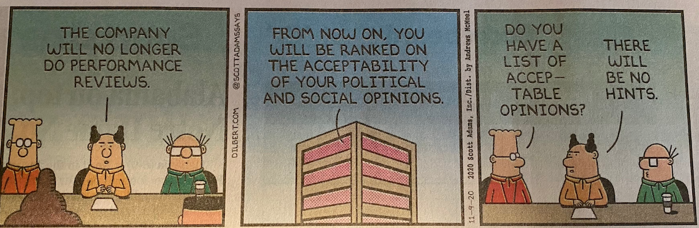

mav-er-ick n. A person who shows
independence of thought and action, especially by refusing to
adhere to the policies of a group to which that person
belongs. The American Heritage Dictionary i-con-o-clast n. 1. One who destroys sacred
images. 2. One who attacks and seeks to overthrow traditional
or popular ideas or institutions. The American Heritage
Dictionary Wordsmith An Element of Style Make definite assertions.
Avoid tame, colorless, hesitating, non-committal language.
Rule 12, William Strunk, Jr. Q: What is the shortest lie in computing?
A: It works. On Programming: A bad day writing code in Scheme is
better than a good day writing code in C. David Stigant More on Programming: Always code as if the guy who ends
up maintaining your code will be a violent psychopath who knows
where you live. John F. Woods Yet more on Programming: Programming is just another name
for the lost art of thinking. Arctic Fidelity aka Aaron Hsu On Mutation and Programming: Assignment leads to mutation. Mutation
leads to pointers. Pointers lead to suffering! Anton van
Straaten On Teaching Programming: Wir sind froh, dass die
Absolventen schon Java können. Programmieren müssen wir
denen halt noch beibringen. via Mike Sperber who overheard senior developers talk about new recruits One Final Word on Programming
We shall do a much better programming job, provided we approach the
task with a full appreciation of its tremendous difficulty, provided
that we respect the intrinsic limitations of the human mind and
approach the task as very humble programmers. Dijskstra, Turing Award Lecture On Scientists:
I believe that a scientist looking at nonscientific problems is
just as dumb as the next guy.
Richard Feynman [E]very statue and street building has been renamed, every date
has been altered. And the process is continuing day by
day and minute by minute. History has stopped. Nothing exists
except an endless present in which the Party is always right.
George Orwell, 1984  Thank you Scott Adams |